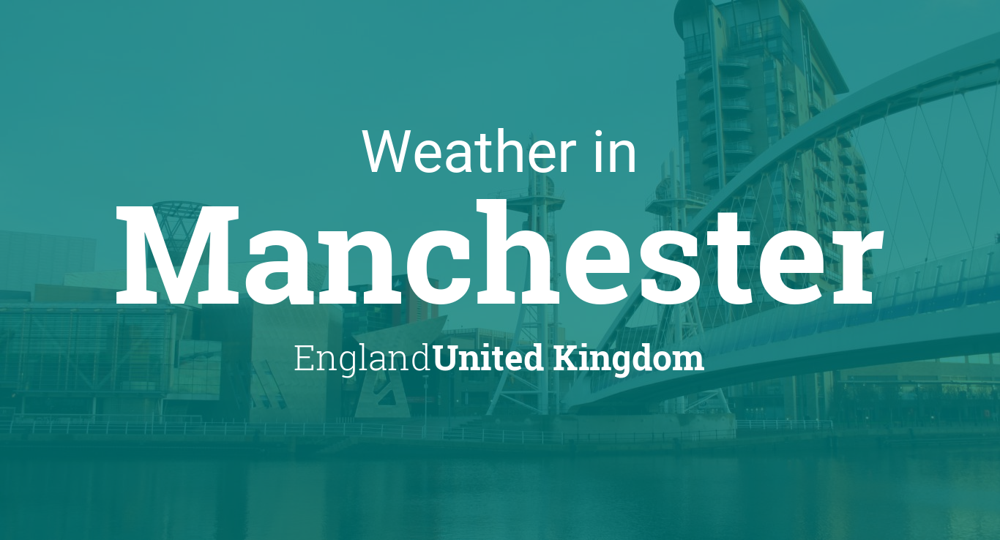

UK
weather News
Manchestre Uk


manchester weather
Latest forecast for Manchester
Last updated 44 minutes ago.
Today, early rain and cloud will quickly clear southwards, leaving a mixture of sunny spells, patchy cloud, and scattered blustery showers. A cooler and windy day with gales possible in places.
Tonight
Tonight will turn even cooler, and there will be a mixture of blustery showers, clear spells, and patchy cloud throughout. A windy night, with brisk north-westerlies.
Wednesday
Tomorrow will be another windy day with a mixture of sunny spells, patchy cloud and blustery showers. A risk of thunder in places. A cool day. It will turn drier and brighter late.
Outlook for Thursday to Saturday
Thursday will see winds ease a little, and there will be sunny spells and just the odd shower about in places. A clear, cool night will follow. A sunny start on Friday, but into the afternoon areas of cloud will move in from the west at times.Saturday will be cloudy, breezy and turning milder. A few spots of rain are possible but steadier rain will develop in the evining.